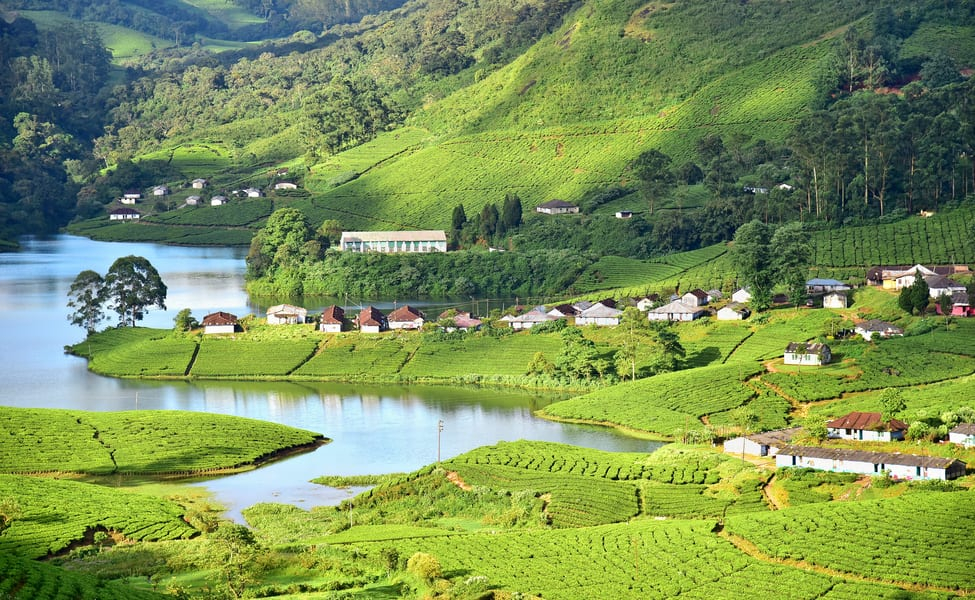

Idukki is a district in the Indian state of Kerala which was constituted on 26 January 1972, by taking Peerumade, Udumbanchola, Devikulam taluks from
Kottayam district and Thodupuzha taluk of Ernakulam district. Its division was previously headquartered at Kottayam city, but moved to Kuyilimala near
Painavu and Cheruthoni in June 1976. Idukki district lies amid the Cardamom Hills of Western Ghats in Kerala. Though it is the second-largest district
in the region in terms of area, it has the lowest population density among the districts of Kerala. There are only two municipalities in the district
and the urban population is comparatively much lower than the rural population.
Places to visit:
Idukki Dam, Meesapulimala, Kalvari Mount, Anayirankal Dam Reservoir, Panchalimedu, Anchuruli Waterfalls, Cheruthoni Dam, Thommankuthu waterfalls,Thomankuthu Falls